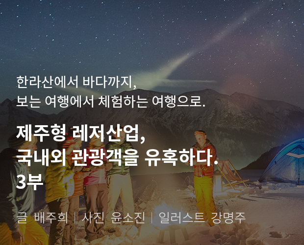

기획취재콘텐츠
- Home
- 제주라이프
- 기획취재콘텐츠
제주형 레저산업, 국내외 관광객을 유혹하다. 3부새로운 글



자연을 즐기며 사랑하는 법을 배우는 자연주의 트레킹, 피엘라벤 클래식
<피엘라벤 클래식>은 스웨덴의 아웃도어 브랜드인 피엘라벤(fjallraven)에서 진행하는 트레킹 어드벤쳐로 더 많은 사람들에게 자연을 즐기고 누릴 수 있게 하고, 이를 통해 자연을 더 사랑하게 하고자 하는 취지로 시작된 이벤트다. 단일 브랜드에서 진행하는 가장 큰 규모의 트레킹 행사이기도 하다. 15년 역사를 가진 피엘라벤 클래식은 유럽, 아시아, 북미 대륙에서 각각 다양한 기후와 자연을 전 세계 수천명의 트레커들이 경험할 수 있는 자리를 마련해주고, 이를 통해 성취감과 자연을 사랑하는 법, 자연의 소중함을 배우게 한다.
- 세계 각국의 트레커들이 참여한 피엘라벤 클래식 코리아 2019 ⓒ피엘라벤 코리아 -
2005년 스웨덴에서 시작된 피엘라벤 클래식은 좀 더 다양한 지역에서 더 많은 사람들이 자연을 누릴 수 있도록 덴마크, 미국, 홍콩에 이어 대한민국이 5번째 클래식 개최국가로 지정되었다. 2019년 10월 9일~12일(1차:9일~11일/2차:10일~12일)에 걸쳐 제주에서 열린 피엘라벤 클래식 코리아에는 무려 400여 명(내국인 300명, 외국인 100명)이 참가하여 총 60km의 코스를 걸었다. 코스는 △1일차 : 어리목 – 윗세오름 – 돈내코 (돈내코원앙캠핑장 야영), △2일차 : 돈내코 – 동백길 – 무오법정사 (하원마을캠핑장 야영) △3일차 : 무오법정사 – 돌오름길 – 천아숲길 – 헤브론힐 리조트(피니시)에 이르는 대장정이었다.
대한민국으로 확장된 피엘라벤 클래식, 제주를 택하다
한국에서 피엘라벤 클래식이 개최된 계기는 다양한 환경에서 더 많은 사람들이 자연을 즐길 수 있도록 개최국을 늘리며 확장하는 브랜드의 철학과도 상통하지만, 열정적인 한국 트레커들의 공이 크게 작용한 특별한 케이스로 꼽힌다.
클래식 스웨덴에는 매년 200명 이상의 한국인이 참가합니다. 클래식 홍콩도 한국 참가자가 절반 이상이고, 덴마크의 경우도
50명 이상이 참가하고 있어요. 참가자 수를 순위로 보면 더 놀라운 데요, 한국인 참가자수는 스웨덴에서는 5위, 덴마크에서는
3위, 홍콩에서는 1위예요. 그만큼 한국의 트레커들이 열정적이고, 이 열정만큼 클래식이 한국에서 개최되어야 한다는 데에
더한 명분은 없었던 것 같습니다. 앞서 2018년 제주도에서 폭스트레킹3)을 진행했는데, 그때 스웨덴 담당자들이 함께 참관했습니다.
그 열정이 전달된 덕인지 2019년 피엘라벤 클래식 코리아를 제주를 무대로 정식으로 런칭할 수 있었죠.
- 김문기 피엘라벤 클래식 코리아 담당
※ 3) 피엘라벤이 주관하는 트레킹 어드벤쳐는 △클래식 △폴라 △폭스트레킹으로 나뉘며 각 분류별 특징은 다음과 같다.
- 클래식 : 2박 이상의 트레킹 행사로 총 8개 국가에서 열리며 각 나라별 환경에 개최 시기와 코스난이도, 기간이 다르다. 수백에서 수천 명이 참가하는 대규모 어드벤쳐로 반드시 본인의 배낭에 야영장비 및 트레킹 장비를 메고 스스로 완주해야 하며, 환경과 안전을 위한 피엘라벤 클래식 룰을 철저히 준수해야 함
- 폴라 : 매년 4월 4박 5일간 북극권 300km를 개썰매를 타고 횡단하는 동계 익스트림 이벤트. 전세계 다양한 지역에서 20명이 선정되어 진행되는데, 매년 수만명이 지원하며, 페이스북을 통해 자신의 개성이 담긴 영상이나 사진 자료를 통해 투표를 많이 받는 사람이 위너가 되어 참가 자격이 주어지며, 모든 비용 및 장비는 피엘라벤이 지원한다.
- 폭스트레킹 : 피엘라벤 클래식 코리아의 로컬 버전으로 한국에서 가장 인기 있는 트레킹 어드벤쳐다. 2015년부터 지금까지 10회째 이어지고 있으며 매년 봄, 국내 다양한 지역에서 열린다. 참가자수는 300명 규모로 한국 사람들에게 피엘라벤 클래식을 간접적으로 경험시켜 준다.
제주도를 클래식 장소로 결정한 이유는 한국에서 가장 상징적이고 유명한 장소이고 자연경관이나 환경이 세계 어디 내놔도 손색없는 곳이기 때문이다. 또 한국에서 개최되는 클래식은 당연히 한국인 참가자가 가장 많을 수밖에 없는데, 이들에게도 긴 시간동안 휴가를 내고 클래식에 참가할만한 상징적인 장소를 만들어 주고 싶었고, 그 해답은 제주도였다고.
- 장엄한 경관을 자랑하는 한라산 어리목 코스를 걷고 있는 트레커들. 오름 능선 너머 백록담이 우뚝 솟아있다. ⓒ피엘라벤 코리아 -
그 선택은 옳았다. 제주에서 가장 상징적인 곳인 한라산 코스에 대한 참가자들의 만족도는 아주 높았다. 난이도 자체는 좀 어려웠지만 날씨도 좋았던 터라 외국인 참가자는 물론 모두에게 특별한 뷰를 선사해 주었다고. 2~3일차는 한라산 둘레길의 아름다운 숲길을 걷는 코스로 1일차 보다는 수월했고, 시원한 숲길을 걸으며 힐링을 할 수 있었다는 평가가 이어졌다. 피엘라벤 코리아측은 계속해서 코스를 수정해나가며 클래식 참가자들에게 한라산과 둘레길숲, 바다 등 제주의 자연 경관을 만끽할 수 있도록 할 예정이다.
앞으로도 자연을 아끼고 즐기는 방법을 알리는 기회를 만들어 나갈 것
피엘라벤 클래식의 경우 수백 명의 참가자가 같은 날 같은 코스를 걷게 되는데, 피엘라벤 코리아 측은 그로 인해 참가자들이 지나간 자리가 훼손되거나 흔적이 남는 것은 대회의 취지와 전혀 맞지 않는 결과이며 결코 타협할 수 없음을 거듭 강조했다.
대회 전 참가자들에게 피엘라벤 클래식의 룰을 여러 번 설명하는 등의 교육을 진행하는데, 참가자들 대부분은 이를 온전히 받아들이고 이해한다고. 클래식을 통해 처음 트레킹과 백패킹을 접하는 참가자에게는 행사를 참가하는 것 자체가 트레킹 에티켓이나 자연을 보호하는 마음을 자연스럽게 체득하게 하는 교육의 장이 되는 셈이다. 이렇듯 피엘라벤 클래식은 주최자와 참가자 모두 스스로 감시자가 되어 자연을 아끼고 보호하며, 이를 통해 자연을 지속가능하게 즐길 수 있다는 마음가짐을 갖도록 노력을 아끼지 않고 있다.
- 피엘라벤 클래식 코리아 2019 대회에 참가한 트레커들 ⓒ피엘라벤 코리아 -
클래식 코리아는 매년 가을 제주에서, 폭스트레킹은 매년 봄에 내륙지역에서 개최될 예정인데, 자주 대회가 개최되는 건 지속해서 다양한 더 많은 사람들이 자연을 아끼면서 즐길 줄 알게 하는 방법과 기회를 만들어 주는 것이 중요하기 때문이라고. 자연이 있어야 사람도 있고, 자연을 아끼고 즐길 줄 아는 사람이 많아져야 브랜드가 지속될 수 있다는 피엘라벤 코리아의 철학을 확인 할 수 있었다.
피엘라벤은 앞으로도 더 많은 국가에서 클래식을 진행할 계획이며, 2020년부터 영국, 중국, 독일대회가 추가되어 향후 8개 나라에서 클래식이 개최될 예정이다.
※ 2020년은 코로나19로 인해 글로벌 전체 클래식 대회가 취소되거나 2021로 연기되었다.
이전글
다음글